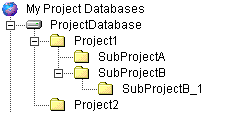

A project database is a container for projects and serves as a named hierarchical representation of a group of projects, subprojects, and versioned files.

A project database defines how Serena ChangeMan Version Manager operates on all of the projects within the project database. By default, projects inherit the configuration settings of the project database. You can also change the configuration settings for each individual project.
The first time you run Version Manager, you have the option of letting Version Manager create a new empty project database for you. This project database is configured but empty, meaning it contains no projects. This empty project database is created in a directory named newdb beneath the Version Manager installation directory.
| Changing Project Database Properties | Project Database Structure |
| Creating Project Databases | About Version Manager Projects |
| About Workspaces | About Configuration Files |
| Custom Tools Overview | |